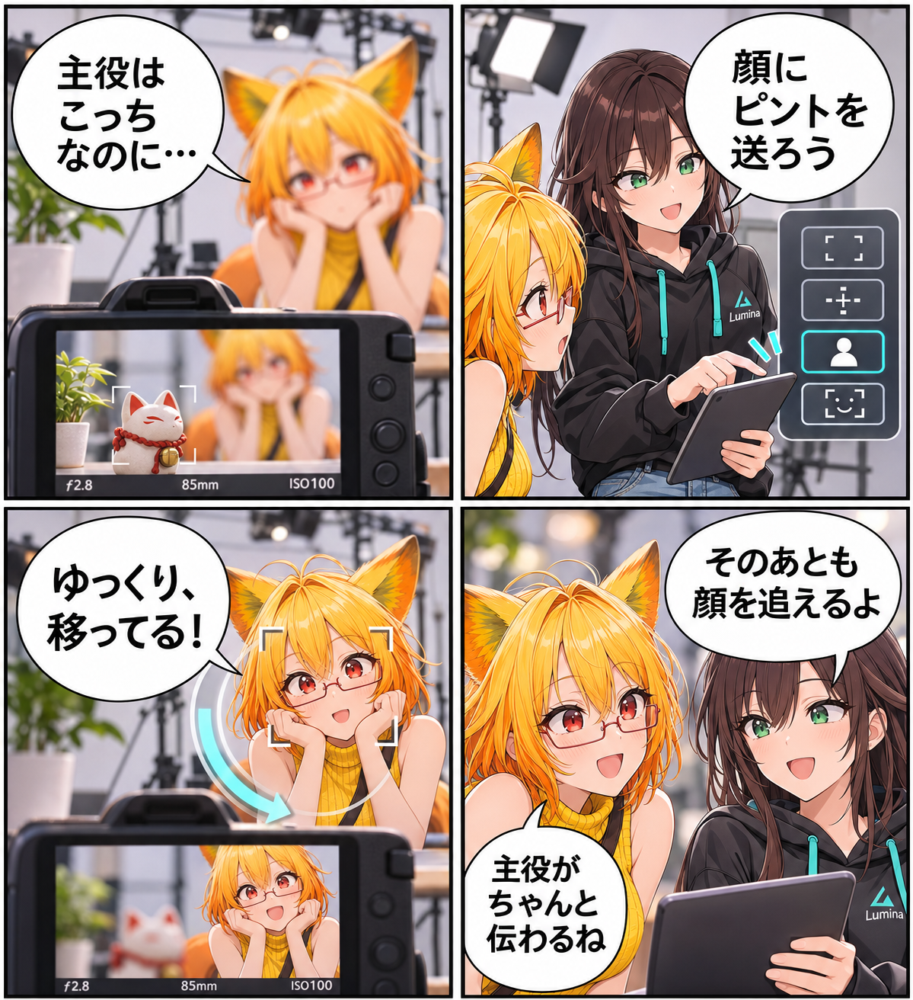

2026.11.27 / Feature Spotlight
閑話休題：主役へ、静かにピントを送る
選択したアバターや顔へピントを合わせ、ラックフォーカスから追従へつなげる既存の撮影機能を紹介します。
今回は、前日と比べて有意な開発進展を確認できなかったため、現行実装の機能紹介へ切り替えました。集計期間は2026-11-26 03:00:00 JSTから2026-11-27 02:59:59 JSTまで、対象はViewerの
main です。集計終了時点のHEADは c33733a41be121b814a1732df8c9eae089ace2ea、対象コミットは0件です。未コミット差分は期間内の実装事実を確定できないため実績に含めていません。紹介内容は現行実装のフォーカス機能に基づきます。
主役を選んで、ピントの行き先を決める
フォーカスモードは手動、中央、選択アバター、選択顔を使い分けられます。選択アバターまたは選択顔では、現在選ばれているアバターの位置、またはHumanoidの頭ボーンを基準にします。主役が動く撮影でも、ピントの行き先を明確にしやすい仕組みです。
距離を急に切り替えず、画面の中で移す
「顔へラックフォーカス」は、現在のピント距離から選択中の顔までを滑らかに補間します。既定の時間は約1.2秒です。移動が終わると顔追従へ切り替わるため、単発の演出だけでなく、その後も主役を追い続ける撮影へつなげられます。
レンズ側の設定と一緒に扱う
焦点距離と絞りのプリセットは、被写界深度とボケの見え方を調整します。フォーカスの対象を決める操作と、レンズの雰囲気を決める操作は別々です。背景を強くぼかせば常に良いというものではなく、撮りたい画面に応じて使い分けます。
4コマの話
前景の小物に合ったピントを見て、ろひが「主役はこっちなのに」と首をかしげます。ルミナが選択したろひの顔へ、ピントがゆっくり移る様子を示します。最後は、ろひの表情をくっきり捉えた画面を二人で確認する、カメラの焦点が主役を見つける小さな寸劇です。
まとめ
VRASの既存フォーカス機能は、手動・中央・選択アバター・選択顔を使い分け、必要に応じてラックフォーカスから顔追従へつなげられます。撮りたい主役を選び、画面の中で静かにピントを送るための仕組みです。